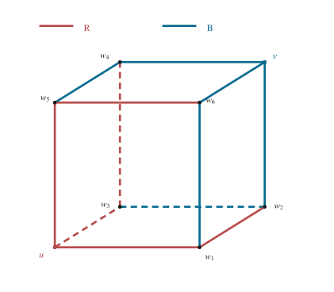
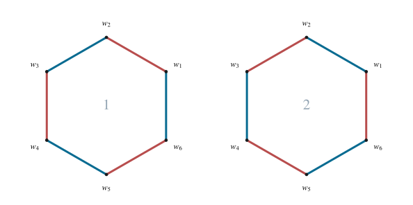

正方体棱染色的补事件计数
分类六红六蓝且每个面均不含两条红棱的染色。
1 题目
从一个正方体的 条棱中随机选取 条，将它们染成红色。求事件“该正方体的 个面中，至少有一个面恰含 条红色棱”发生的概率。
2 解答展开 / 收起
2.1 建立等可能样本空间
每一种染色由六条红棱的集合唯一确定；其余六条棱记为蓝色。所有六元棱集等可能，故样本空间大小为：
记题目所求事件为 。直接数“至少一个面”会遇到多个面同时满足条件的重叠，因而改数补事件 ：六个面中，没有一个面恰有两条红棱。
2.2 定义红面与蓝面
在补事件中，一个面的红棱数只能是 。称含 或 条红棱的面为红面；称含 或 条红棱的面为蓝面。后者也正是含至少三条蓝棱的面。因此每个面恰归入一种颜色，六个面中至少有三个同色面。
六个面只有红面、蓝面两类。若两类都至多两个面，总面数就至多为四，矛盾；所以至少一类含三个面。下面先把其中一种多数颜色命名为红色来分析。交换全部红蓝颜色是六红六蓝染色之间的一一对应，并且把一个面的红棱数 变为 ；因此它保持“没有二红二蓝面”的条件，下面的结论也适用于另一种颜色占多数的情形。
2.3 证明三个红面必须共顶点
正方体的六个面组成三对相对面。从中选三个面：若没有相对的一对，便是每对各选一个，三个面交于一个顶点；否则三个面中包含一对相对面，第三个面分别与这两个面相邻。
在后一情形中，三个面之间只有两条公共棱。每个红面至少含三条红棱，按面数出的红棱出现次数至少为 ；一条公共棱至多被多计一次，故实际不同红棱至少为 条，与总共只有六条红棱矛盾。所以三个红面必交于同一个顶点，记为 。
2.4 分析计数下界的等号
三个过 的面两两相交于一条棱，得到以 为端点的三条不同棱。三面共同的交集只有顶点 ，所以没有棱同时属于三个面。令 表示把每个面的红棱分别计数后相加的总数，令 表示这三条两面公共棱中红色棱的数量。
普通红棱在 中出现一次，公共红棱出现两次；减去 就恰好把每条红棱计数一次。因此三面并集中的红棱数为 ，它至多等于全体红棱数 。又因三面各至少有三条红棱，；公共棱只有三条，。于是：
可将中间差写为 。右边两项均非负，而式（2）要求它们的和为零，所以分别为零：、。三个面的红棱数均至少为 ，总和又是 ，因而各恰为 。 说明以 为端点的三条棱全部为红色； 说明全部六条红棱都已在这三个面中出现，外部不会再有红棱。
设 为 的对顶点。以 为端点的三条棱不属于上述三个面，因而全部为蓝色。其余三个面均过 ，各已含至少两条蓝棱，所以不可能是红面。由于正在考虑补事件，它们只能是蓝面。故六个面恰分成三个红面与三个蓝面。
2.5 确定剩余六条棱的颜色
为明确剩余棱的邻接关系，可给顶点标上三个二进制坐标，取 、，相邻顶点恰有一个坐标不同。去掉与 相邻的棱后，剩余的环依次为 。这给出了六条剩余棱，也说明没有遗漏其他棱。
每个过 的面已有两条与 相邻的红棱，而该面一共必须恰有三条红棱。因此该面剩下的两条环棱恰为一红一蓝。三个这样的面约束了环上间隔出现的三对邻棱；还需要另外三个面的约束来连接它们。
还须检查过 的三个面。每个这样的面在环上也有两条棱；它是蓝面，故这两条中至多一条为红色。环上总共有三条红棱，每条恰属于一个过 的面，因而三个面在环上的红棱数之和为三。各数至多为一，故只能全为一。
综上，环上每一对相邻棱都异色，因此六条棱只能交替染色。选定其中一条棱的颜色后，其他五条均被确定，恰有两种染法。反过来，两种交替染法都使过 的三个面各有三条红棱、过 的三个面各有一条红棱，确实属于补事件。

图 1. 补事件的一种染色： 的三条邻棱全红， 的三条邻棱全蓝；虚线表示被遮挡的棱。

图 2. 剩余六条棱按邻接关系展开成环，不表示空间投影。固定顶点位置后，交替染色恰有两种。
2.6 计数并排除重复
正方体共有四对对顶点。先选一对，共 种；再决定哪一个顶点是红棱汇聚的 ，共 种；最后选择六边形环的两种交替染法之一，共 种。
这里没有重复计数。任一所得染色中， 是唯一一个三条邻棱全红的顶点， 是唯一一个三条邻棱全蓝的顶点；环上的其余六个顶点都邻接一条红色环棱和一条蓝色环棱，不可能具有这两种性质。因此从染色可以唯一恢复所选对顶点及其红蓝次序，环的染法也随之唯一。
2.7 求概率
补事件的每个面均为“三红一蓝”或“一红三蓝”，所以确实没有“二红二蓝”的面；分类已涵盖至少三个红面或至少三个蓝面的全部可能。
3 方法与讨论
补事件把“至少一个面”的重叠条件变成每个面都要遵守的局部限制。对同色面的棱出现次数建立上下界，当界恰好相等时，局部颜色被迫固定；最后用能从染色唯一恢复的参数计数，避免重复。